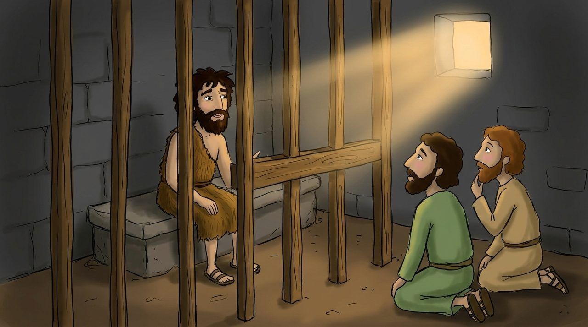

1 · Matta 11:1–15
Tərəddüd edən Yəhya
Yəhya Məsihin balta və odla hökm edəcəyini demişdi (3:10–12). Amma İsa xəstələrə şəfa verir, günahkarlarla süfrə başında oturur. Zindandakı Yəhya çaşbaş qalmışdı.
İsa Yeşaya 35 və 61-ci fəsilləri birləşdirib cavab verir: korlar görür, axsaqlar yeriyir, yoxsullara çatdırılır. Və deyir: “Mənə görə büdrəməyən nə bəxtiyardır!”
Dərindən baxaq · Şübhəni danlamadı
İsa Yəhyanın sualından dərhal sonra “Qadından doğulanlar arasında Yəhyadan böyüyü olmayıb” deyə onu tərifləyir. Şübhə imanın əksi deyil. Yəhya şübhəsini götürüb İsanın yanına getdi. Bu, imandır.